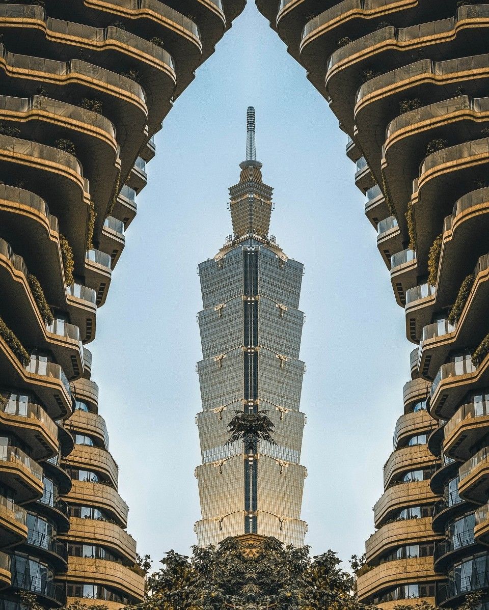
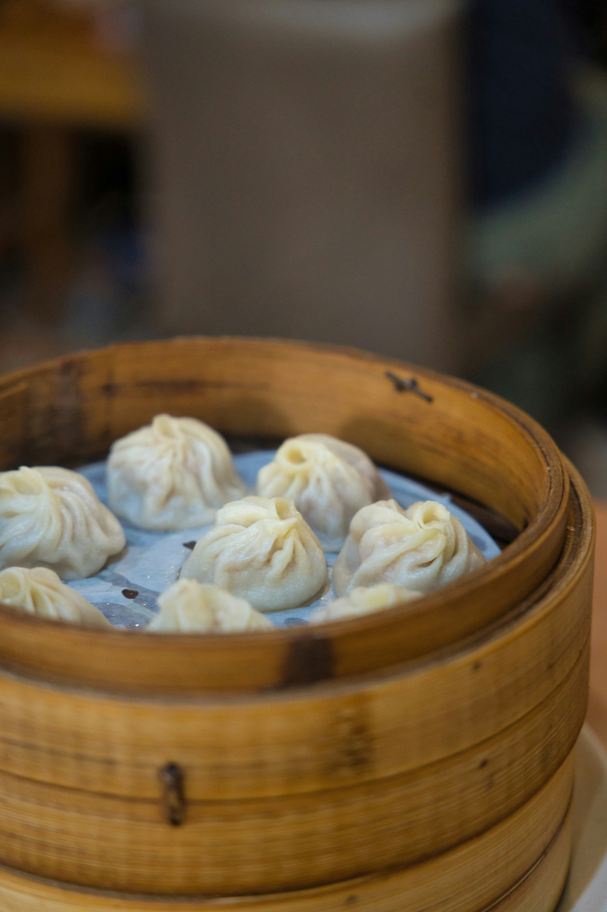
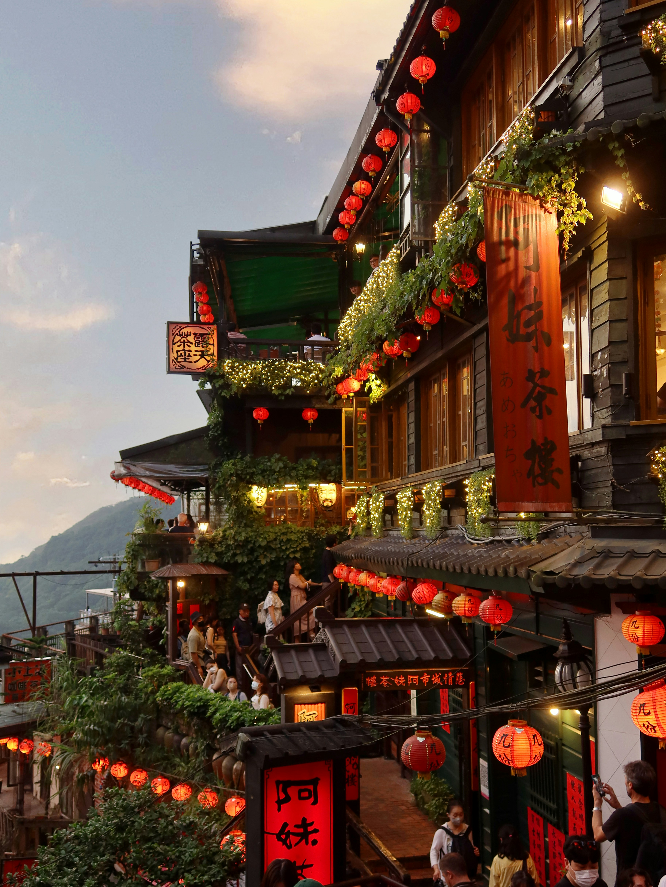

Midnight Taipei: A Guide to Taiwan's Best Night Markets
Taipei comes alive after sunset with glowing neon signs, crowded sidewalks, and endless rows of street food stalls. Scooters rush through busy intersections while music and conversation spill out from cafés and restaurants. The city feels energetic but welcoming, creating an atmosphere that encourages wandering without a plan. From brightly lit shopping streets to quiet alleyways filled with hidden cafés, Taipei’s nightlife blends excitement and comfort together effortlessly. Every corner seems to reveal something unexpected, whether it is a late-night dessert shop, a tiny bookstore, or a family-run food stand serving recipes passed down for generations.
Exploring Taipei after dark means discovering hidden alleys filled with late-night dessert shops, vintage stores, and cozy tea cafés. Night markets are more than places to eat; they are social spaces where locals gather after work and travelers experience the city’s culture in its most authentic form. The sounds of sizzling food, arcade games, and conversations create an atmosphere that feels lively and cinematic. Walking through the crowded streets with snacks in hand becomes part of the experience itself, making even simple moments feel memorable and immersive.

Taipei’s skyline reflects the balance between tradition and modern design that defines the city itself. Towering buildings like Taipei 101 stand beside curved apartment complexes, small temples, and narrow neighborhood streets lined with scooters. This contrast gives the city a layered personality that feels both futuristic and deeply connected to everyday life. Glass skyscrapers reflect sunlight during the day while glowing signs and illuminated windows transform the skyline completely at night. The architecture throughout Taipei creates a visual rhythm that makes the city instantly recognizable.
During the daytime, Taipei feels calmer and slower compared to its busy nightlife. Cafés fill with students and creatives while bookstores, boutiques, and tea shops open gradually throughout the morning. Even in crowded districts, there are moments of stillness hidden between the city’s movement. Small parks, quiet side streets, and riverside walkways provide space to slow down and appreciate the details that make Taipei unique. This balance between energy and calmness is part of what makes the city feel approachable and comforting to visitors.

Taiwan’s night markets are known for serving some of the country’s most iconic street food. Crispy sweet potato balls, scallion pancakes, fried chicken cutlets, grilled skewers, and bubble tea fill the streets with sweet and savory aromas. Trying different snacks while walking through crowded markets becomes a central part of the experience, turning dinner into an adventure through flavor, sound, and movement. Beyond the food itself, the markets represent an important part of Taiwanese culture where community, tradition, and modern city life continue to blend together naturally every night.
